การจัดองค์ประกอบภาพ
10 Oct 2019
Author : Arm Suphakit
วิธีจัดองค์ประกอบภาพ การทำให้ภาพถ่ายของเราสวยงาม ดึงดูดสายตา และน่าสนใจ สิ่งสำคัญอย่างหนึ่งก็คือการจัดองค์ประกอบภาพ ซึ่งเรามักจะได้ยินบ่อย ๆ แต่อาจจะยังไม่คุ้นว่าต้องทำอะไร ยังไง แล้วมีแบบไหนบ้าง วันนี้ผมก็เลยรวบรวมวิธีในการจัดองค์ประกอบภาพ ที่จะทำให้ภาพถ่ายสวยขึ้น และน่าสนใจมากขึ้นครับ
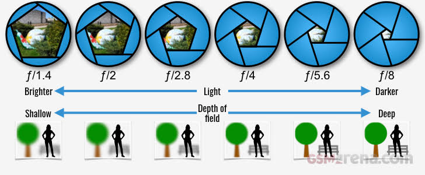เพิ่มความสนใจให้ฉากหน้า
การที่เราทำฉากหน้าให้น่าสนใจนั้น จะเป็นการเพิ่มมิติให้กับภาพของเรา และดึงดูสายตาผู้ชมมากขึ้น อีกทั้งถ้าเราสังเกตดี ๆ การที่ไม่มีฉากหน้ามักจะทำให้ภาพขาดรายละเอียด เรื่องราวที่ไม่สมบูรณ์
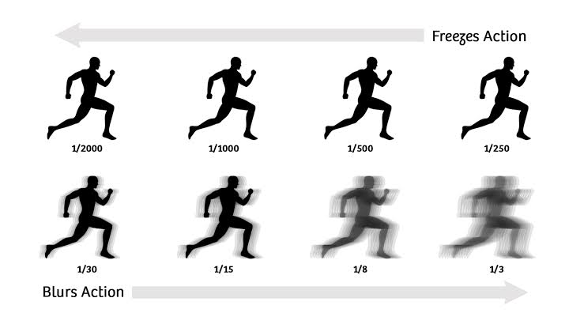ใช้กรอบภาพจากธรรมชาติ
กรอบภาพที่ว่านี้เราอาจจะเห็นจากประตู หรือต้นไม้ต่าง ๆ ที่เรามองแล้วมันเหมือนกรอบภาพ เมื่อเรามีมุมมองดังกล่าวเราก็จัดจุดเด่นที่เราอยากเล่าไว้ในกรอบนั้น

ใช้รูปแบบพื้นผิวที่เกิดขึ้นซ้ำ ๆ
เรียกติดปากว่า แพทเทิร์นนั่นแหละ เมื่อเกิดแพทเทิร์นซ้ำ ๆ สายตาเราก็จะถูกดึงดูดไว้ทันที เพียงแค่เราใช้เส้นนำสายตาจากแพทเทิร์นเหล่านั้นนำเข้าหาแบบ
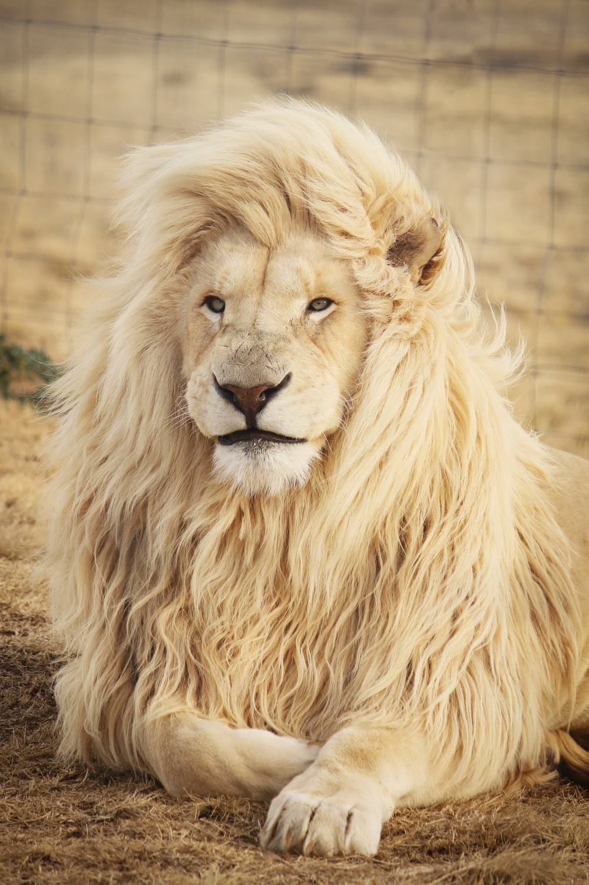จัดให้พอดีเฟรม
การเติมเฟรมภาพให้เต็มด้วยวัตถุหรือแบบ โดยไม่ให้เหลือพื้นที่วางเลย ก็จะช่วยให้ผู้ชมโฟกัสได้อย่างชัดเจนและมองเห็นรายละเอียดของภาพได้แบบเต็ม ๆ
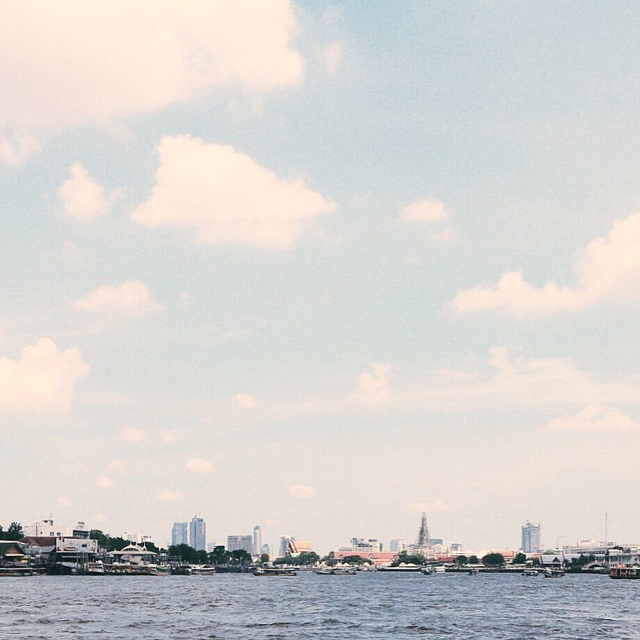ให้ฉากหลังเป็นพื้นที่ว่าง
การปล่อยฉากหลังให้โล่งเลย หลายคนอาจบอกว่าจะทำให้ภาพขาดความน่าสนใจไป ซึ่งอาจจะไม่ใช่เสมอไปครับ ลองดูตัวอย่างจากภาพ เห็นได้ชัดว่าหลักคือท่าเรือ และท้องฟ้าเป็นฉากหลัง ซี่งเหลือพื้นที่ไว้เยอะจนล้นไปหมด แต่ด้วยจุดต่างและคอนทราสต์ในภาพระหว่างฉากหลังและแบบทำให้ท่าเรือนั้นดูโดดเด่นขึ้นมาได้ทันที
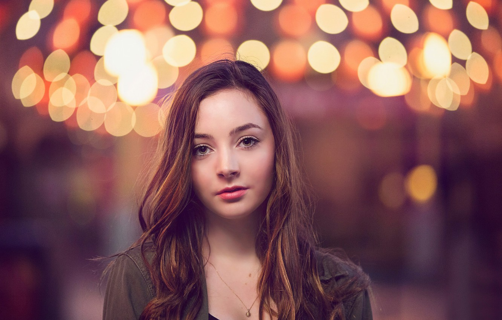แยกวัตถุหรือแบบออกมาให้ชัดเจน
เทคนิคนี้จะใช้ประโยชน์ในการที่เบลอฉากหลังเพื่อให้แบบหลักของเราเด่นขึ้นมา เป็นวิธีที่เรานิยมมากในการถ่ายภาพพรอทเทรตครับ สิ่งสำคัญคือแบบไม่ควรหลุดโฟกัส และแยกออกจากฉากหลังได้ชัดเจน ยิ่งถ้าเราได้เลนส์ที่มีโบเก้สวย ๆ แล้วล่ะก็ภาพนี่กรุ๊งกริ๊งขึ้นอีกแน่นอน
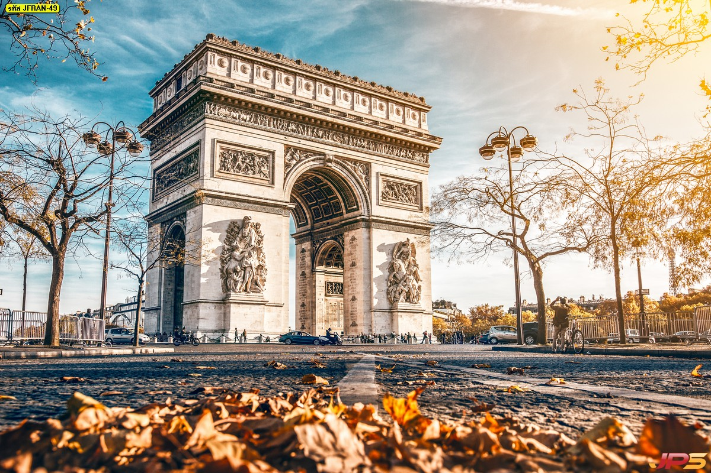การจัดความสมดุลในภาพ
การจัดความสมดุลในภาพ เป็นวิธีช่วยเพิ่มความน่าสนใจให้ภาพดูไม่ถูกทิ้งน้ำหนักไปที่จุดเด่นเพียงจุดเดียว การทำให้ภาพสมดุล ทำให้เรามองเรื่องราวด้านหลังได้ด้วยเหมือนกัน ไม่ได้มองแค่ข้างหน้าเพียงอย่างเดียวและที่เห็นได้ชัดคือทุกภาพที่ผมเล่าออกมานั้นไม่ได้ใช้เทคนิคการวางองค์ประกอบแค่เทคนิคเดียวนะ จะใช้หลาย ๆ อย่างร่วมกันให้ภาพดูลงตัวครับ
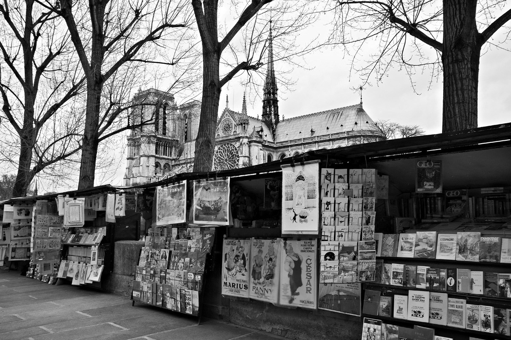เทียบเคียง
การเทียบเคียงเป็นเครื่องมือที่มีประสิทธิภาพมากๆในการจัดองค์ประกอบ การเทียบเคียงคือการวางองค์ประกอบ 2 หรือ มากกว่านั้น เพื่อให้ขัดแย้งกัน หรือ คล้อยตามกัน มันทำให้ภาพดูน่าสนใจและมีเรื่องราว
ภาพนี้ถ่ายที่ปารีส ด้านล่างของภาพเป็นหนังสือวางไว้ ค่อนข้างดูรก แน่นๆและมีโปสการ์ดแขวนอยู่ด้านบน แตะฉากหลังเป็นวิหารทีสวยงาม ไม่เหมือนกับฉากหน้า มันดูขัดแย้งกัน แต่มันก็แสดงความเป็นปารีสในมุมมองที่แตกต่างออกไป มันเล่าเรื่องเกี่ยวกับความแตกต่างทั้งสองอย่าง
การถ่ายรูปร่างมืดและพื้นหลัง (Dark Figure and Background)
เรามักจะเรียกการถ่ายภาพแบบนี้ว่า ซิลลูเอท (Silhouette) ซึ่งเป็นการถ่ายภาพโดยให้รายละเอียดการเล่าเรื่องอยู่ในเงาดำเท่านั้น และให้คนดูจินตนาการภาพรายละเอียดเข้าไปในภาพเอง ซึ่งเทคนิคนี้จะใช้ได้ดีกับการถ่ายภาพพื้นหลังที่เป็นท้องฟ้า และยังทำให้ภาพถ่ายดูน่าสนใจ มีพลังอีกด้วย
การแยกรูปร่าง (Separate Shapes)
การวางองค์ประกอบแบบนี้ ต้องสังเกตให้ดีว่าสิ่งสำคัญอยู่ที่การจัดความสมดุลที่อยู่ในภาพ แม้รูปร่างของวัตถุจะต่างกัน เหมือนวางของแบบไร้ระเบียบ แท้จริงแล้วลักษระการจัดองค์ประกอบแบบนี้ก็จะมีรูปแบบของความสมดุลอยู่
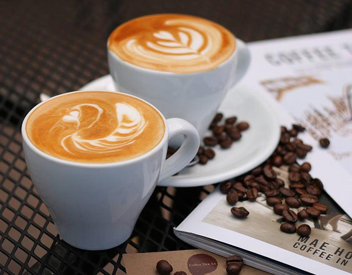เลี่ยงการวางวัตถุตรงกลางภาพ (Off-Center)
หากองค์ประกอบของภาพ หรือวัตถุไม่ได้โดดเด่นมากพอ ควรเลี่ยงการจัดวางให้อยู่ตรงกลางภาพ หากองค์ประกอบของภาพ หรือวัตถุไม่ได้โดดเด่นมากพอ ควรเลี่ยงการจัดวางให้อยู่ตรงกลางภาพ ซึ่งการวางจะอยู่ที่ประมาณ 1/3 หรือ 2/3 ของภาพจะดูเหมาะสมมากกว่า
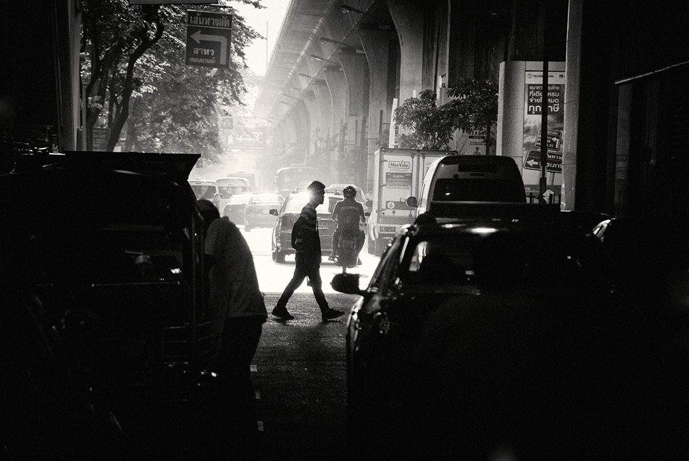ความต่างระหว่างแสงและเงา (Light and Shadow contrast)
เน้นคอนทราสต์ให้กับภาพ โดยใช้แสงและเงาสร้างความโดดเด่นให้กับภาพ การถ่ายภาพด้วยองค์ประกอบแบบนี้เป็นที่นิยมมาก ทำให้ภาพดูมีมิติ น่าสนใจ สะดุดต
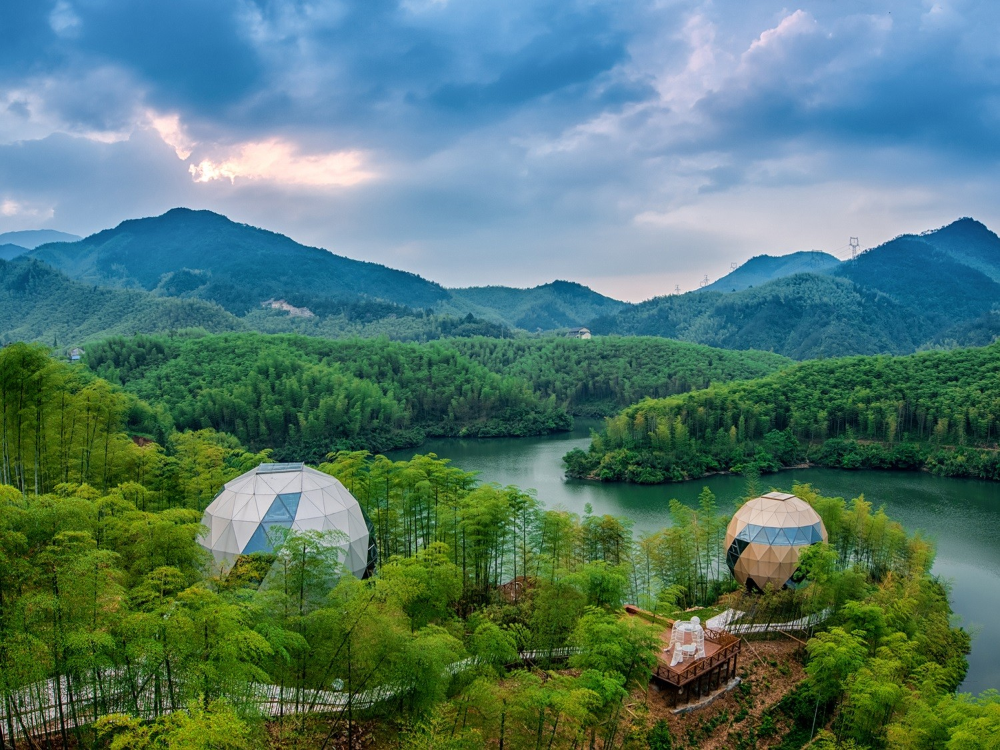การเทียบให้เห็นสัดส่วนให้กับภาพทิวทัศน์ (Figure in a Landscape)
การจัดองค์ประกอบให้ภาพสามารถบอกเล่าสัดส่วนขององค์ประกอบที่อยู่ในภาพได้ เช่น มีภูเขา ต้นไม้ คน องค์ประกอบเหล่านี้ช่วยให้ภาพทิวทัศน์ดูมีพลัง สร้างความยิ่งใหญ่ให้กับธรรมชาติมากขึ้น
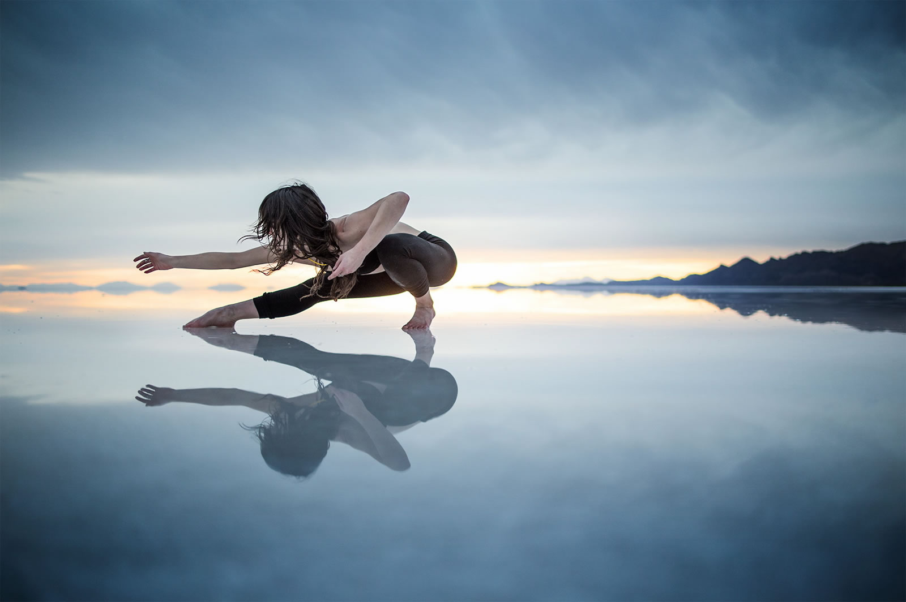Reflection | เงาสะท้อน
การจัดองค์ประกอบให้ภาพสามารถบอกเล่าสัดส่วนขององค์ประกอบที่อยู่ในภาพได้ เช่น มีภูเขา ต้นไม้ คน องค์ประกอบเหล่านี้ช่วยให้ภาพทิวทัศน์ดูมีพลัง สร้างความยิ่งใหญ่ให้กับธรรมชาติมากขึ้น
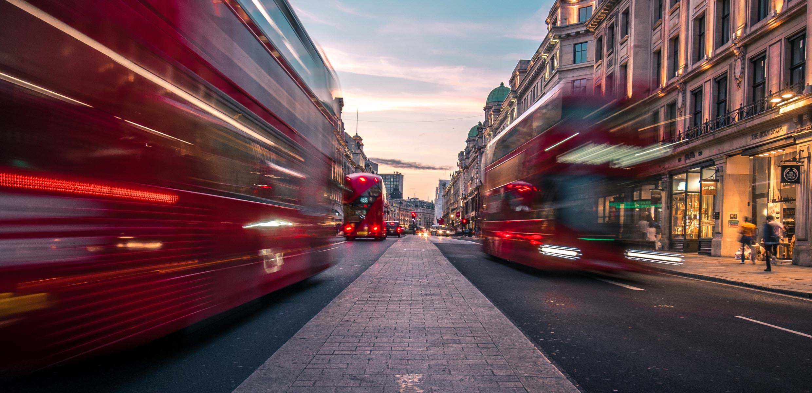เก็บจังหวะความเคลื่อนไหว (Motion)
การเก็บจังหวะความเคลื่อนไหวสร้างความน่าสนใจ และเรื่องราวความเป็นไปของภาพถ่ายได้เป็นอย่างดี
นำสิ่งที่ขัดขวางรูปแบบ(แพทเทิร์น)เข้าไปในภาพ (Pattern Interruption)
ยกตัวอย่างภาพนี้จะมีแพทเทิร์นของไฟที่เกิดขึ้นในภาพ ซึ่งถ้ามีแค่แพทเทิร์นไฟอาจจะเฉย ๆ
แต่เมื่อเราใส่บางอย่างเข้าไปในแพทเทิร์นนี้ก็จะสร้างความน่าสนใจให้กับเรื่องราวในภาพได้เลยß
จัดองค์ประกอบซ้อนกันให้เห็นเป็นชั้น ๆ (Stacked Planes)
การถ่ายภาพแยกเป็นชั้น ๆ ให้ภาพบอกเล่าได้ถึงระยะห่างของแต่ละส่วนของภาพ เช่น ภูเขา ต้นไม้ สร้างมุมมองตอนลึก(มิติ) ให้กับภาพ เป็นการจัดวางองค์ประกอบที่สร้างความน่าสนใจขึ้นได้มาก